AllMyBooks — das Handbuch
Diese Seite erklärt AllMyBooks vollständig: wie die Anwendung aufgebaut ist, wie sie installiert wird, was jede Ansicht tut — und was zu tun ist, wenn etwas nicht funktioniert. Sie ist zum Nachschlagen gedacht; über das Inhaltsverzeichnis links kommen Sie überall direkt hin.
Was ist AllMyBooks?
AllMyBooks verwaltet Ihre Büchersammlung — gedruckte Bücher ebenso wie E-Books. Es hält fest, welche Bücher Sie besitzen, wo sie stehen, wer sie geschrieben hat, was Sie gelesen haben und an wen Sie etwas verliehen haben.
Die Anwendung läuft auf Ihren eigenen Geräten. Es gibt keinen Anbieter-Server, kein Benutzerkonto bei einem Dienst und keine Gebühren. Ihre Daten liegen dort, wo Sie die Anwendung installieren — auf Ihrem PC oder auf einem Netzwerkspeicher bei Ihnen zu Hause.
Es gibt AllMyBooks als Windows-Programm und als Android-App. Beide zeigen dieselbe Sammlung — sie greifen auf denselben Bestand zu. Wie das zusammenhängt, erklärt der Abschnitt Das Server-Client-Prinzip.
Buchcover sind urheberrechtlich geschützt, und die Fotos von Personen stammen aus Wikipedia, wo sie nur mit Urhebernennung weitergegeben werden dürfen. Auf einer frei zugänglichen Seite wie dieser lassen sie sich deshalb nicht zeigen; an ihrer Stelle stehen farbige Ersatzbilder und Initialen.
In Ihrer eigenen Installation sehen Sie dort die echten Cover und Fotos — es fehlt der Anleitung, nicht der Anwendung. Mehr dazu im Anhang.
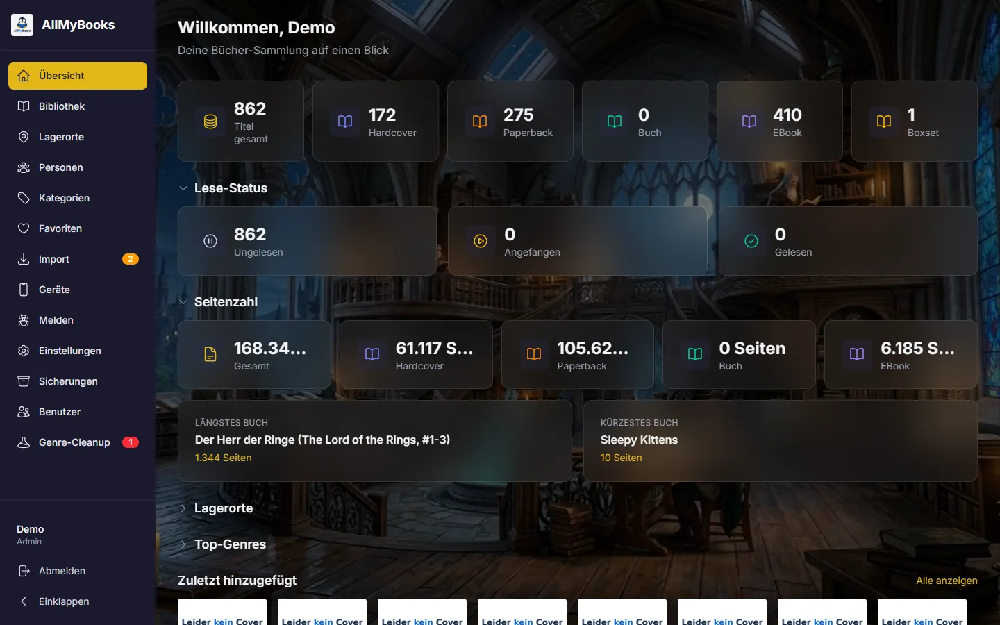
Was die Anwendung kann
Bestand führen
Titel, Ausgaben, Reihen, Verlage, Erscheinungsjahre, Seitenzahlen, Sprachen und Einbandarten.
Lesen festhalten
Angefangen, gelesen, Favorit — je Benutzer getrennt, mit Datum und Verlauf.
Standorte verwalten
Welches Buch in welchem Regal steht — mit Regeln, welche Ausgabearten wo zulässig sind.
Bücher aufnehmen
Per ISBN, per Kamera-Scan, aus Tabellen anderer Programme oder von Hand.
Cover pflegen
Automatisch geladen, selbst hochgeladen oder abfotografiert — mit Zuschnitt und Entzerrung.
Mehrere Personen
Jedes Haushaltsmitglied hat ein eigenes Konto mit eigenem Lese-Verlauf und eigenen Favoriten.
Handy und Tablet
Die Android-App zeigt den Bestand unterwegs und liest ISBN-Codes mit der Kamera ein.
E-Books abgleichen
Die Angaben zu gekauften E-Books lassen sich aus der Tolino-Cloud übernehmen.
Eine ausführliche Beschreibung jeder einzelnen Ansicht steht weiter unten im Kapitel Die Oberfläche.
Voraussetzungen
| Für | Sie brauchen |
|---|---|
| Windows-Programm | Windows 10 oder 11, 64 Bit. Rund 700 MB freier Platz bei eigenständigem Betrieb, deutlich weniger als Client. Keine Administratorrechte. |
| Android-App | Ein Android-Gerät und ein laufender Server im selben Netzwerk. Die App kommt nicht aus dem Play Store, die Installation aus einer Datei muss deshalb einmalig erlaubt werden. |
| Server im Container | Ein Gerät, auf dem Docker läuft — etwa ein NAS. Optional; wer nur einen PC nutzt, braucht das nicht. |
Eine Internetverbindung wird nicht dauerhaft gebraucht. Nötig ist sie nur, wenn Buchdaten oder Cover nachgeschlagen, E-Books abgeglichen oder Aktualisierungen geholt werden. Der Bestand selbst ist jederzeit ohne Internet nutzbar.
Das Server-Client-Prinzip
AllMyBooks besteht aus zwei Teilen, die getrennte Aufgaben haben. Wer diese Trennung einmal verstanden hat, versteht auch, warum bei der Installation nach einer Betriebsart gefragt wird und warum das Handy einen Hub braucht.
| Teil | Aufgabe | Wo er läuft |
|---|---|---|
| Der Server auch: Hub |
Hält die Datenbank und alle Bilddateien. Er ist die einzige Stelle, an der Ihr Bestand wirklich liegt. Er hat keine eigene Bildschirmoberfläche. | Genau einmal — auf einem PC oder auf einem Netzwerkspeicher. |
| Der Client | Zeigt den Bestand an und nimmt Ihre Eingaben entgegen. Er speichert selbst nichts Dauerhaftes, sondern fragt den Server. | Beliebig oft — auf jedem PC und jedem Handy, das mitmachen soll. |
„Server“ klingt nach eigener Hardware — gemeint ist hier nur eine Rolle. Bei der eigenständigen Installation übernimmt Ihr ganz normaler Windows-PC beide Rollen gleichzeitig: Er ist Server und Client. Sie merken davon nichts.
Die drei Aufbauarten
Aus dieser Rollentrennung ergeben sich drei sinnvolle Aufbauten. Die Entscheidung fällt bei der Installation des Windows-Programms und lässt sich später ändern — allerdings nicht per Klick, sondern durch eine Neuinstallation.
A — Nur ein PC (eigenständig)
Passend, wenn Sie AllMyBooks nur an einem Rechner benutzen. Das ist die Voreinstellung des Installers und der Weg, der ohne Vorwissen funktioniert.
Grenze: Ein Handy kann sich mit diesem PC verbinden — aber nur, solange er eingeschaltet ist und AllMyBooks läuft.
B — Server auf einem Netzwerkspeicher
Passend, wenn ein NAS ohnehin durchläuft und mehrere Geräte mitmachen sollen. Nur so klappen nächtliche Sicherungen und Zeitpläne zuverlässig — sie brauchen einen laufenden Server.
C — Ein PC als Server, weitere Geräte als Clients
Die Mischform: Ein Windows-PC wird eigenständig installiert und ist damit zugleich Server für die anderen. Handy und Zweit-PC verbinden sich mit ihm. Das funktioniert gut, hat aber eine Bedingung, die man kennen muss.
Bei eigenständigem Betrieb steckt der Server im Programm. Wird das Programm beendet, ist auch der Server weg: Ein Handy findet ihn dann nicht mehr, und eine für 01:00 Uhr eingeplante Sicherung wird nicht erstellt und auch nicht nachgeholt.
Beim Server im Container besteht dieses Problem nicht — er läuft durch.
Welcher Aufbau für wen?
| Ihre Lage | Empfehlung |
|---|---|
| Ein Rechner, kein Handy | A — eigenständig. Nichts weiter einzurichten. |
| Ein Rechner, Handy soll gelegentlich mit | C — eigenständig installieren, Handy koppeln. Der PC muss dafür laufen. |
| Ein NAS ist vorhanden | B — Server dorthin. Der beste Aufbau, wenn mehrere Geräte mitmachen. |
| Mehrere Rechner, kein NAS | C — der Rechner, der am häufigsten läuft, wird eigenständig installiert; die übrigen als Client. |
Wo die Daten liegen
Alles, was AllMyBooks speichert, liegt beim Server — nirgendwo sonst. Ein Client hält nichts Dauerhaftes; die Android-App legt lediglich eine Kopie zum Lesen an, damit sie ohne Verbindung noch etwas anzeigen kann.
| Betriebsart | Ordner |
|---|---|
| Windows, eigenständig | %APPDATA%\AllMyBooks — Datenbank, Buchcover, Personenfotos und Sicherungen. |
| Windows, Client | Nur Programmeinstellungen. Der Bestand liegt beim Server, mit dem sich der Client verbindet. |
| Server im Container | In den Ordnern, die beim Einrichten des Containers eingebunden wurden. |
Der Datenordner überlebt jedes Update — und sogar eine Deinstallation. Wer wirklich alles loswerden will, löscht ihn anschließend von Hand.
Begriffe von A bis Z
In der Oberfläche und in dieser Anleitung tauchen einige Wörter auf, die eine feste Bedeutung haben. Hier stehen sie alle beieinander.
- Ausgabe in der Oberfläche auch: Medium
- Ein bestimmtes Exemplar eines Titels: das Taschenbuch, das gebundene Buch, das E-Book. Ein Titel kann mehrere Ausgaben haben — sie stehen dann gemeinsam auf einer Seite, jede mit eigenem Lagerort und eigenem Cover.
- Bibliografie
- Das vollständige Werkverzeichnis einer Person, zusammengetragen aus Wikidata, OpenLibrary und der DNB. Es zeigt auch, was Sie davon nicht besitzen — siehe Die Seite einer Person.
- Boxset Zusammenstellung, Schuber
- Mehrere Bände, die gegenständlich zusammengehören und gemeinsam im Regal stehen. Ein Boxset hat deshalb einen eigenen Lagerort. Abzugrenzen von der Reihe, die nur die inhaltliche Folge beschreibt.
- Betriebsart
- Die Entscheidung, ob das Windows-Programm eigenständig läuft (bringt den Server selbst mit) oder als Client (verbindet sich mit einem vorhandenen Server). Sie wird bei der Installation abgefragt und danach gemerkt.
- Client
- Ein Programm, das anzeigt und bedient, aber nichts dauerhaft speichert. Die Android-App ist immer ein Client, das Windows-Programm kann einer sein.
- DNB
- Die Deutsche Nationalbibliothek. Voreingestellte Quelle für Buchdaten — sie braucht keinen Schlüssel und liefert vor allem deutschsprachige Titel zuverlässig. Cover liefert sie allerdings keine.
- Genre und Kategorie
- Genres sind eine feste, gepflegte Liste (Krimi, Sachbuch, Fantasy …) und werden beim Anlegen eines Titels automatisch zugeordnet.
- Kategorien legen Sie selbst an — für alles, was Ihnen sonst wichtig ist: „Weihnachtsgeschenk“, „Ausgeliehen an Papa“, „Zweitauflage“.
- Hub
- Das andere Wort für den Server. Es wird vor allem dort verwendet, wo es um die Verbindung des Handys geht: Das Handy wird „mit einem Hub gekoppelt“.
- Inventur
- Der geführte Abgleich eines Regals mit der Wirklichkeit: durchgehen, abhaken, und am Ende entscheiden, was mit dem Nicht-Abgehakten geschieht. Ausführlich unter Die Inventur.
- Kopplung
- Die einmalige Verbindung zwischen einem Gerät und einem Hub. Sie wird über einen QR-Code hergestellt und bleibt danach bestehen — auch nach einem Neustart des Geräts.
- Kopplungscode
- Eine achtstellige Zeichenfolge, die zum QR-Code gehört. Wer den QR-Code nicht scannen kann, tippt sie zusammen mit der Adresse von Hand ein. Sie ist nur kurz gültig und lässt sich einmal einlösen.
- Lagerort
- Der Ort, an dem ein Buch tatsächlich steht: „Wohnzimmer, Regal 2“, „Keller-Kiste“, „Thalia-Cloud“. Je Lagerort lässt sich festlegen, welche Ausgabearten dort zulässig sind — eine leere Liste bedeutet: alle sind erlaubt.
- Lese-Eintrag Lese-Ereignis
- Ein Vermerk, dass jemand ein Buch angefangen oder zu Ende gelesen hat, mit Datum. Jeder Benutzer hat eigene Einträge — zwei Personen können dasselbe Buch unabhängig voneinander lesen.
- Markierungen
- Vier unabhängige Schalter je Titel: Zum Ausmisten (bewusst aussortiert), Neu (kürzlich dazugekommen), Vermisst (physisch nicht auffindbar) und Wunschliste (noch nicht im Besitz). Siehe Die vier Markierungen.
- Metadaten
- Die Angaben über ein Buch: Titel, Autor, Verlag, Jahr, Seitenzahl, Sprache, Beschreibung, Cover. AllMyBooks holt sie automatisch, sobald es eine ISBN kennt.
- Replikat
- Die Lesekopie, die die Android-App auf dem Gerät anlegt. Dadurch bleibt die Bibliothek auch dann sichtbar, wenn der Hub gerade nicht erreichbar ist. Es ist eine Kopie — der Bestand selbst liegt weiter beim Server.
- Reihe Serie
- Die inhaltliche Folge eines Werks — Band 1, 2, 3. Auf der Titelseite stehen die übrigen Bände in einem eigenen Abschnitt, sodass Lücken sofort auffallen. Nicht zu verwechseln mit dem Boxset.
- Sicherung
- Eine vollständige Kopie von Datenbank und Bilddateien in einer Archivdatei. Sie lässt sich jederzeit zurückspielen und ist zugleich der Weg, den Bestand auf einen anderen Rechner umzuziehen.
- Stapel Reiter „Unbearbeitet“
- Der Zwischenspeicher für Bücher, bei denen beim Import etwas offen blieb — etwa eine fehlende Ausgabeart. Sie sind nicht verloren: Sie warten dort, bis Sie sie ergänzen und übernehmen.
- Thalia-Abgleich Thalia-Sync
- Übernimmt die Angaben zu Ihren gekauften E-Books aus der Tolino-Cloud in Ihre Bibliothek — Titel, Autor, ISBN, Cover, Lesefortschritt. Die Buchdateien selbst werden nicht heruntergeladen. Siehe Rechtliches.
- Titel
- Das Werk als solches — „Der Herr der Ringe“. Ein Titel steht einmal in der Bibliothek, auch wenn Sie ihn dreimal im Regal haben; die drei Exemplare sind seine Ausgaben.
- Zusammenführen
- Zwei versehentlich getrennt angelegte Titel zu einem verschmelzen. Sie bestimmen, welcher erhalten bleibt und welcher Wert je Feld gewinnt; Ausgaben, Cover, Lese- und Verleih-Einträge wandern vollständig mit. Siehe Zwei Titel zusammenführen.
Installation — Windows
-
Die Installationsdatei laden
Aus dem Release-Bereich die Datei
AllMyBooks-Setup-<Fassung>.exeherunterladen. Die übrigen Dateien dort (.blockmap,latest.yml) braucht das Programm für seine eigenen Aktualisierungen — sie werden nicht von Hand geladen. -
Die Windows-Warnung wegklicken
Beim Start meldet Windows „Der Computer wurde durch Windows geschützt“. Grund ist, dass die Datei nicht kostenpflichtig signiert ist — nicht, dass etwas mit ihr nicht stimmt. Auf Weitere Informationen klicken, dann auf Trotzdem ausführen. Das ist einmalig je Installation.
-
Die Betriebsart wählen
Die erste Seite des Installers stellt die einzige Frage, die man sich vorher überlegt haben sollte. Der Abschnitt Die drei Aufbauarten hilft bei der Entscheidung.
Auswahl Bedeutung Eigenständig
VoreinstellungDieser PC verwaltet die Bücher selbst. Server und Datenbank kommen mit. Belegt rund 500 MB mehr Platz. Der Weg, der ohne Vorwissen funktioniert. Mit vorhandenem Server verbinden Für einen Server, der schon läuft. Die Adresse wird beim ersten Start abgefragt — halten Sie sie bereit. Diese Frage kommt bewusst vor der Ordnerwahl: Der Platzbedarf hängt davon ab. Bei „Client“ werden die Server-Teile gar nicht erst ausgepackt — die Installation ist dann deutlich kleiner und schneller.
-
Ordner und Startmenü
Danach folgen der Installationsordner und die Frage nach einem Startmenü-Eintrag. Installiert wird in Ihr Benutzerprofil unter
%LOCALAPPDATA%\Programs— ohne Administratorrechte. Spätere Aktualisierungen ebenso; Windows fragt dabei nie nach.
Der Installer fragt die Betriebsart kein zweites Mal — er merkt sich Ihre Wahl. Ein Fehlklick kann sie also nicht umstellen. Wer sie wirklich wechseln will, deinstalliert vorher.
Installation — Android
Die App liegt nicht im Play Store. Laden Sie
AllMyBooks-<Fassung>.apk aus dem
Release-Bereich
auf das Gerät und öffnen Sie die Datei.
Android fragt dabei einmalig, ob Apps aus dieser Quelle installiert werden dürfen. Diese Erlaubnis gilt der App, die die Datei geöffnet hat (meist Ihrem Browser oder der Dateiverwaltung) — nicht AllMyBooks selbst.
Das kommt vor und liegt daran, dass die App nicht aus dem Play Store stammt und sich selbst aktualisieren darf. Die Meldung lässt sich wegklicken; die Installation läuft danach normal weiter.
Nach der Installation braucht die App einen Hub, mit dem sie sich verbindet — siehe Das Handy anbinden.
Installation — Server im Container
Wer einen Netzwerkspeicher oder einen kleinen Heimserver mit Docker betreibt, kann den AllMyBooks-Server dort dauerhaft laufen lassen. Das ist der Aufbau B und der stabilste von allen: Der Bestand ist immer erreichbar, Zeitpläne für Sicherungen laufen zuverlässig, und kein PC muss dafür eingeschaltet sein.
Der Server braucht dabei zwei Dinge:
- eine PostgreSQL-Datenbank (Fassung 16), die üblicherweise als zweiter Container daneben läuft;
- eingebundene Ordner für Cover, Personenfotos, Sicherungen und die Datenbankdateien — damit sie eine Aktualisierung des Containers überstehen.
Erreichbar ist die Oberfläche danach im Browser unter der Adresse des
Servers, zum Beispiel http://192.168.1.50:3004. Diese Adresse
tragen auch die Clients ein.
Geben Sie dem Servergerät in Ihrem Router eine feste Adresse (meist „DHCP-Reservierung“ oder „statischer Lease“). Ändert sich die Adresse nach einem Neustart, finden gekoppelte Geräte den Hub nicht mehr und müssen neu eingerichtet werden.
Der erste Start
Eigenständig: Beim allerersten Start richtet die Anwendung ihre Datenbank ein — das dauert einen Moment. Danach öffnet sich die Bibliothek und führt durch die Einrichtung.
Als Client: Tragen Sie die Adresse Ihres Servers ein,
etwa 192.168.1.50:3004. Die Anwendung prüft sie sofort und
sagt Ihnen, woran es liegt, wenn dort niemand antwortet. Danach melden
Sie sich mit Ihren gewohnten Zugangsdaten an.
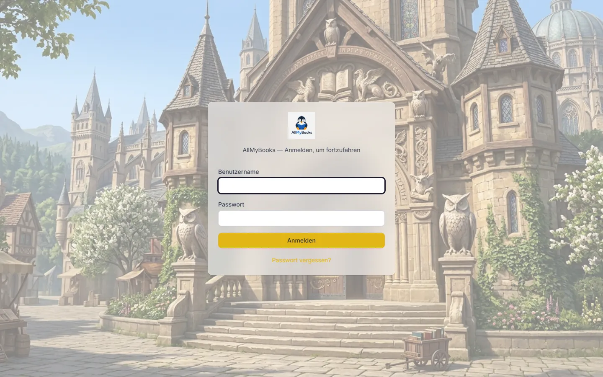
Das erste Konto
Der erste angelegte Benutzer wird automatisch Administrator. Neben Benutzername und Passwort werden vier Sicherheitsfragen aus einer Liste von dreißig verlangt.
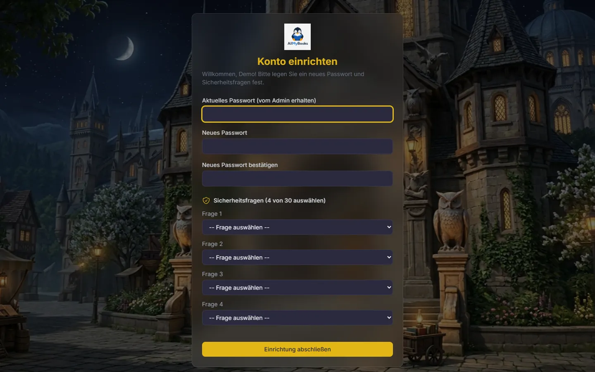
Es gibt keinen Anbieter, der ein Passwort zurücksetzen könnte — die Anwendung läuft bei Ihnen. Wählen Sie Fragen, deren Antworten Sie in zwei Jahren noch genauso schreiben würden, und achten Sie auf Schreibweise und Umlaute.
Die ersten Schritte — in dieser Reihenfolge
Nach dem Anmelden ist die Bibliothek leer. Die folgende Reihenfolge erspart Nacharbeit: Die Punkte 1 bis 3 lohnen sich, bevor die ersten Bücher drin sind.
1 — Sicherungen einrichten
Einstellungen → Sicherungen
Zuerst, nicht zuletzt: Eine Sicherung nützt erst ab dem Zeitpunkt, ab dem sie läuft.
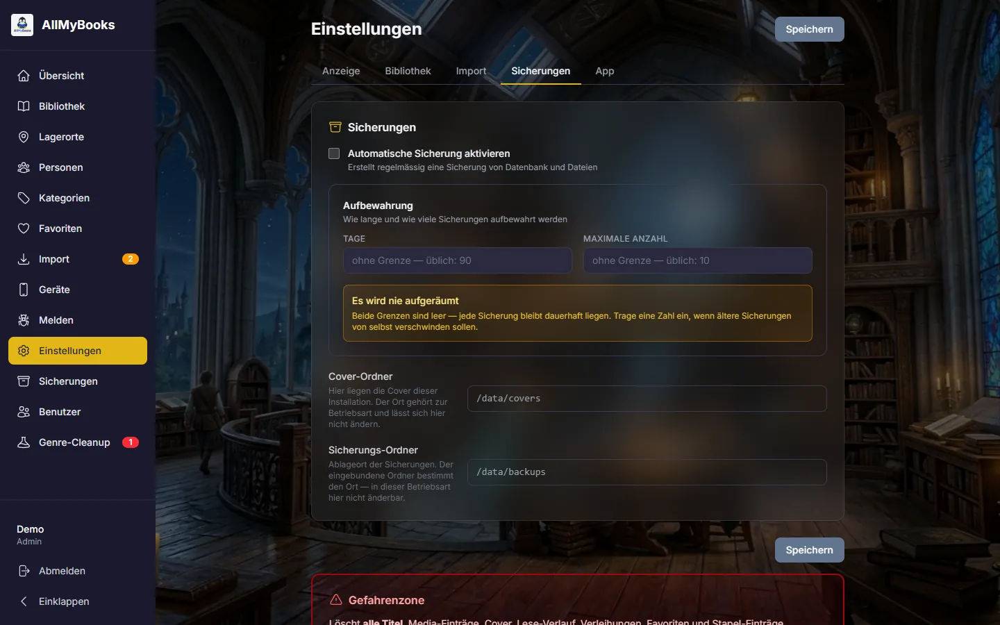
| Einstellung | Was sie bewirkt |
|---|---|
| Automatische Sicherung | Häufigkeit und Uhrzeit, etwa täglich um 01:00. |
| Aufbewahrung | Nach wie vielen Tagen und ab welcher Anzahl alte Sicherungen aufgeräumt werden. Bleiben beide Felder leer, wird nie aufgeräumt — die Sicherungen sammeln sich dann dauerhaft an. |
| Sicherungs-Ordner | Wohin geschrieben wird. Bei eigenständigem Betrieb frei wählbar (etwa ein Ordner in Ihrer Cloud-Ablage), beim Server im Container fest — dort bestimmt ihn der eingebundene Ordner. |
Die Zeitsteuerung sitzt im Server dieser Installation, und der wird zusammen mit dem Programm beendet. Ist AllMyBooks zur eingestellten Zeit geschlossen, wird keine Sicherung erstellt — und sie wird auch nicht nachgeholt. Lassen Sie die Anwendung dafür geöffnet oder erstellen Sie die Sicherung von Hand.
Dasselbe gilt für den Thalia-Zeitplan.
2 — Google-Books-Schlüssel hinterlegen
Einstellungen → Import → Metadaten-Quellen
AllMyBooks holt Buchdaten aus zwei Quellen: der Deutschen Nationalbibliothek (voreingestellt, braucht nichts) und Google Books. Google liefert vor allem die Cover — die DNB liefert keine.
Ohne Schlüssel funktioniert Google trotzdem, aber nur mit rund 100 Abfragen pro Tag. Mit einem eigenen, kostenlosen Schlüssel sind es etwa 1.000. Bei einem größeren Erstimport ist das der Unterschied zwischen „läuft durch“ und „bricht nach 100 Büchern ab“.
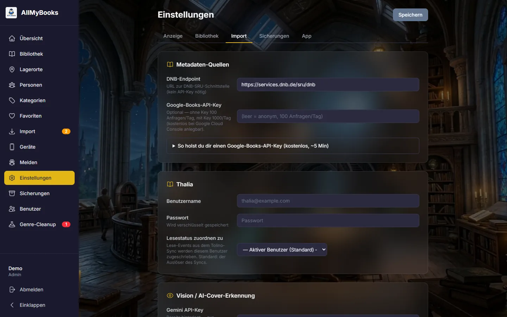
Der Schlüssel wird verschlüsselt in der Datenbank abgelegt.
3 — Lagerorte anlegen
Lagerorte in der Seitenleiste
Legen Sie fest, wo Ihre Bücher stehen: „Wohnzimmer-Regal“, „Keller-Kiste“, „Thalia-Cloud“. Je Lagerort bestimmen Sie, welche Ausgabearten dort zulässig sind — eine leere Liste bedeutet: alle. Ein paar Lagerorte sind bereits angelegt; ergänzen Sie sie vor dem Import, dann landen die Bücher gleich richtig.
4 — Bücher hineinbekommen
Import in der Seitenleiste
Mehrere Wege stehen nebeneinander — welcher passt, hängt davon ab, woher Ihre Daten kommen. Alle Wege sind unter Import ausführlich beschrieben.
Bücher, bei denen beim Import etwas offen bleibt, landen im Reiter Unbearbeitet und warten dort auf Sie — statt stillschweigend zu verschwinden.
Aufbau der Oberfläche
Links steht immer die Seitenleiste mit allen Bereichen, unten darin das angemeldete Konto und der Abmelden-Knopf. Über Einklappen wird die Leiste schmal, wenn Sie mehr Platz für den Bestand brauchen.
Welche Einträge Sie sehen, hängt von Ihrer Rolle ab: Einstellungen, Benutzer, Sicherungen und Geräte sind Administratoren vorbehalten.
Auf allen folgenden Bildschirmfotos stehen anstelle der Buchcover und der Personenfotos farbige Ersatzbilder und Initialen — beides ließe sich auf einer frei zugänglichen Seite nicht zeigen, ohne Rechte Dritter zu berühren. In Ihrer Installation sind dort die echten Bilder. Ausführlich im Anhang.
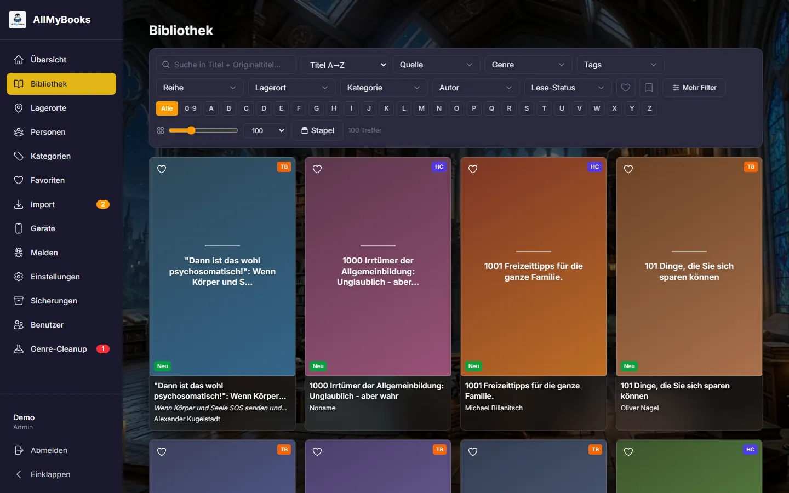
Übersicht
Die Startseite fasst den Bestand in Zahlen: wie viele Titel, wie sie sich auf Hardcover, Taschenbuch, E-Book und Boxsets verteilen, wie viele gelesen und wie viele angefangen sind, und wie viele Seiten insgesamt in Ihren Regalen stehen. Darunter folgen längstes und kürzestes Buch, Lagerorte, häufigste Genres und die zuletzt hinzugefügten Titel.
Unter Einstellungen → Anzeige lässt sich festlegen, welche Seite nach dem Anmelden erscheint. Wer die Übersicht selten braucht, startet direkt in der Bibliothek.
Bibliothek
Der Hauptbereich. Er hat drei Werkzeuge, die zusammenspielen:
| Werkzeug | Was es tut |
|---|---|
| Filterleiste | Suche in Titel und Originaltitel, Sortierung, sowie Filter nach Quelle, Genre, Tags, Reihe, Lagerort, Kategorie, Autor und Lese-Status. Über Mehr Filter kommen weitere hinzu. Die beiden Symbole rechts filtern auf Favoriten und Merkliste. |
| Alphabet-Leiste | Springt zum Anfangsbuchstaben. Alle hebt die Einschränkung wieder auf. |
| Anzeige-Regler | Größe der Kacheln und Anzahl der Einträge je Seite. Rechts daneben steht immer, wie viele Titel die aktuelle Auswahl trifft. |
Die erweiterten Filter
Hinter Mehr Filter klappen vier weitere Einschränkungen auf, die sich mit allem oben kombinieren lassen:
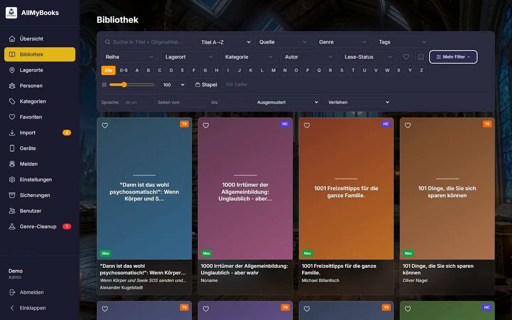
| Filter | Wofür |
|---|---|
| Sprache | Mehrere Kürzel durch Komma getrennt, etwa de,en. |
| Seiten von / bis | Nach Umfang eingrenzen — für „etwas Kurzes für die Zugfahrt“ oder umgekehrt. |
| Ausgemustert | Wahlweise alle, nur aktive oder nur die zum Ausmisten vorgemerkten. |
| Verliehen | Zeigt, was gerade außer Haus ist. |
Stapelverarbeitung
Der Knopf Stapel schaltet die Mehrfachauswahl ein: Jede Kachel bekommt einen Auswahlkreis, und über der Liste erscheint eine Leiste mit den Aktionen. Links darin steht immer, wie viele Titel gerade ausgewählt sind.
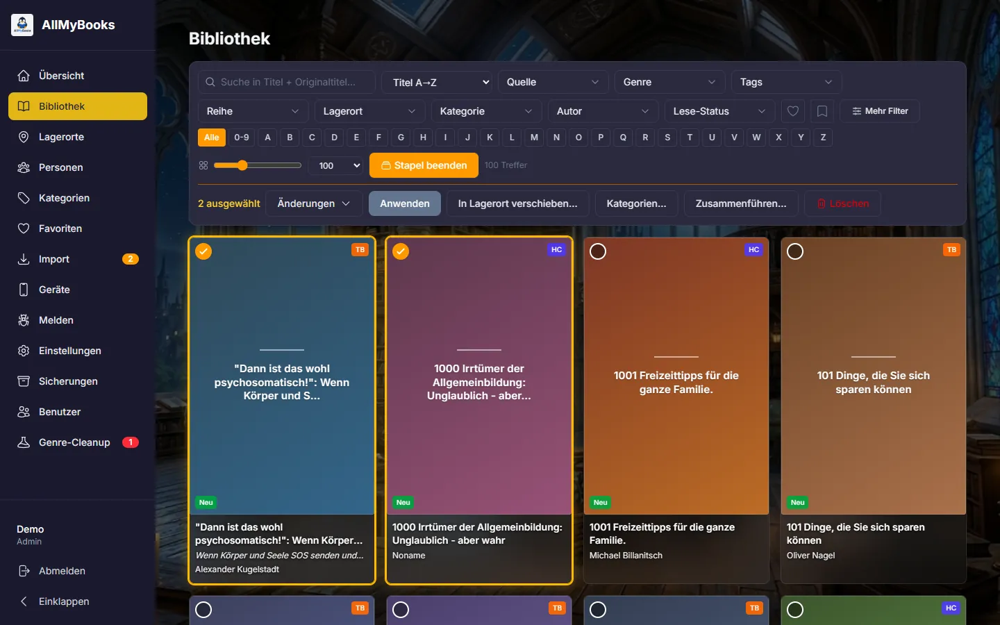
| Aktion | Was sie tut |
|---|---|
| Änderungen | Klappt die Sammelbearbeitung auf: gelesen oder angefangen setzen (mit Datum und für ein wählbares Konto), Favorit, sowie die Markierungen Neu und Zum Ausmisten. Wirksam wird alles erst über Anwenden. |
| In Lagerort verschieben | Hängt alle Ausgewählten in ein anderes Regal um. |
| Kategorien | Kategorien hinzufügen oder entfernen — die Richtung wählen Sie im Fenster. |
| Zusammenführen | Verschmilzt zwei Titel zu einem. Nur bei genau zwei Ausgewählten anklickbar — siehe unten. |
| Löschen | Entfernt die Ausgewählten endgültig aus der Bibliothek. |
Es gibt kein Rückgängig. Prüfen Sie die Zahl links in der Leiste, bevor Sie bestätigen — besonders beim Entfernen von Lese-Einträgen, denn das löscht auch ältere und laufende Vermerke.
Zwei Titel zusammenführen
Derselbe Roman steht zweimal in der Bibliothek — einmal aus dem Import, einmal von Hand angelegt, mit unterschiedlichen ISBN. Statt einen davon zu löschen und die Angaben von Hand zu übertragen, führen Sie beide zusammen.
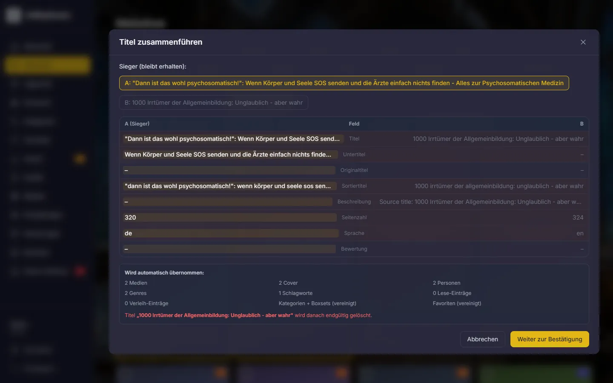
-
Genau zwei Titel auswählen
Bei einer anderen Anzahl bleibt der Knopf gesperrt und erklärt das im Tooltip.
-
Den Sieger bestimmen
Der gewählte Titel bleibt erhalten; der andere verschwindet am Ende.
-
Feld für Feld entscheiden
Für Titel, Untertitel, Originaltitel, Sortiertitel, Beschreibung, Seitenzahl, Sprache und Bewertung wählen Sie durch Anklicken, welche Seite gewinnt. So lässt sich der bessere Wert aus jedem der beiden Einträge behalten.
-
Bestätigen
Der Dialog verlangt zwei Klicks: erst Weiter zur Bestätigung, dann die eigentliche Zusage.
Ohne Nachfrage übernommen werden alle Ausgaben und Cover, die beteiligten Personen, Genres und Schlagworte, sämtliche Lese- und Verleih-Einträge sowie Kategorien, Boxsets und Favoriten beider Seiten. Die Zusammenfassung im Fenster nennt die genauen Zahlen, bevor Sie zustimmen.
Das lässt sich nicht rückgängig machen. Der Dialog nennt seinen Namen ausdrücklich in Rot — lesen Sie die Zeile, bevor Sie bestätigen.
Die Titelseite
Ein Klick auf eine Kachel öffnet den Titel. Hier stehen alle Angaben und alle Ausgaben zusammen.
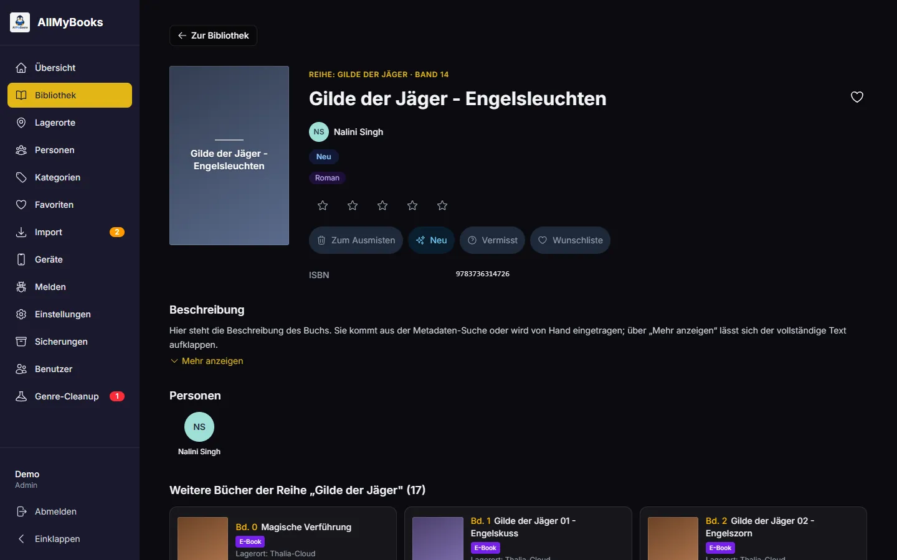
Was Sie hier tun können:
- Angaben bearbeiten — Titel, Untertitel, Originaltitel, Verlag, Jahr, Seitenzahl, Sprache, Beschreibung, Reihe und Bandnummer
- Personen zuordnen — Autor, Übersetzer, Illustrator, Herausgeber, Vorwort
- Bewerten — fünf Sterne, ein Klick auf denselben Stern nimmt die Bewertung wieder zurück
- Lesen festhalten — angefangen und beendet, je Konto getrennt
- Verleihen — an wen und seit wann; die Rückgabe wird ebenfalls vermerkt
- Cover pflegen — hochladen, von einer Adresse holen, fotografieren, zuschneiden und die Perspektive geraderücken
- Ausgaben verwalten — je Ausgabe eigene ISBN, eigener Einband, eigener Lagerort und eigenes Cover
Die vier Markierungen
Direkt unter den Sternen liegen vier Schalter. Sie sind unabhängig voneinander, lassen sich also beliebig kombinieren, und wirken sofort — ohne Speichern.
| Markierung | Bedeutung |
|---|---|
| Zum Ausmisten | Vorgemerkt zum Aussortieren — bewusst weggeben, verkaufen, verschenken. Über den Filter Ausgemustert lässt sich daraus eine Arbeitsliste machen. |
| Neu | Kürzlich dazugekommen. Jeder importierte Titel trägt sie zunächst; sie verfällt automatisch, sobald Sie unter Einstellungen → Bibliothek eine Frist setzen, und beim ersten Lesestart ohnehin. |
| Vermisst | Physisch nicht auffindbar. Wird meist von der Inventur gesetzt, geht aber auch von Hand. Nicht zu verwechseln mit „Zum Ausmisten“: vermisst heißt verschollen, ausgemustert heißt bewusst aussortiert. |
| Wunschliste | Noch nicht im Besitz, aber vorgemerkt. Die Bibliothek hat dafür einen eigenen Filter. |
Ausgaben eines Titels
Ein Titel kann mehrere Ausgaben haben — das Taschenbuch im Regal und das E-Book in der Cloud sind dasselbe Werk. Jede Ausgabe führt ihre eigene ISBN, ihren eigenen Einband, ihren eigenen Lagerort und ihr eigenes Cover; gelesen haben Sie den Titel.
Dann sind vermutlich zwei Titel entstanden, wo einer mit zwei Ausgaben gemeint war — etwa weil Taschenbuch und E-Book verschiedene ISBN haben. Der Weg dahin ist Zusammenführen.
Verleihen und zurückbekommen
Im Abschnitt Verleih tragen Sie ein, an wen das Buch gegangen ist und seit wann. Kommt es zurück, vermerken Sie die Rückgabe — der Eintrag bleibt als Verlauf erhalten, Sie sehen also auch später noch, wer welches Buch wie lange hatte.
In der Bibliothek zeigt der Filter Verliehen auf einen Blick, was gerade außer Haus ist.
Reihen und Boxsets
| Was es ist | |
|---|---|
| Reihe | Die inhaltliche Folge eines Werks — Band 1, 2, 3. Auf der Titelseite steht die Reihe über dem Titel, darunter listet ein eigener Abschnitt die übrigen Bände. So sehen Sie sofort, welcher Band Ihnen fehlt. |
| Boxset | Eine gegenständliche Zusammenstellung — der Schuber, in dem mehrere Bände stecken. Ein Boxset hat einen eigenen Lagerort, denn es steht als Ganzes im Regal. Deshalb fragt die Inventur auch nach, ob ein Band oder das ganze Boxset gemeint ist. |
Den Klappentext von der Rückseite übernehmen
Fehlt die Beschreibung, lässt sich die Rückseite des Buchs abfotografieren: Die Texterkennung liest den Klappentext aus und bietet ihn zur Übernahme an. Das gehört zu den KI-Funktionen und braucht einen hinterlegten Schlüssel — ohne einen bleibt es bei der einfachen Texterkennung, die immer mitläuft.
Zwischen Vorder- und Rückseite steht ein Pfeil. Er vertauscht die beiden: Was als Rückseite abgelegt war, wird zur Vorderseite und umgekehrt. Praktisch, wenn beim Abfotografieren die Reihenfolge durcheinandergeraten ist — beim Scannen des Strichcodes ist das sogar der Regelfall, denn der steht hinten auf dem Buch. Ist nur eine Aufnahme hinterlegt, hängt der Pfeil sie auf die andere Seite um. Ein zweiter Klick nimmt beides wieder zurück; die Bildqualität leidet dabei nicht.
In der Cover-Bearbeitung erscheint auf Geräten mit Touch-Bedienung ein eigener Knopf, der direkt die Kamera öffnet. Auf einem Maus-Rechner fehlt er, weil er dort dasselbe täte wie der Datei-Knopf daneben.
Personen
Alle Autorinnen, Autoren, Übersetzer, Illustratoren und Herausgeber Ihres Bestands. Die Detailseite einer Person zeigt ihre Bücher, ein Foto und eine Kurzbiografie.
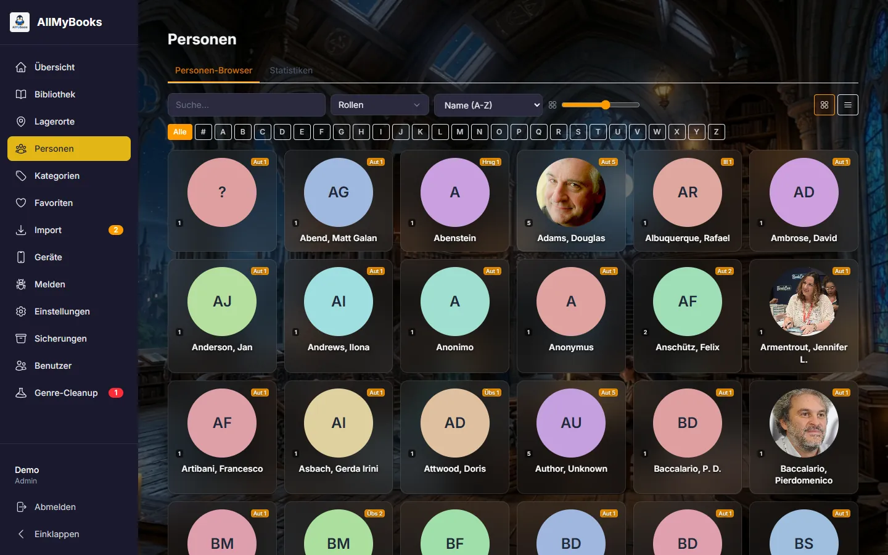
Die Anreicherung läuft über Import → Personen-Anreicherung (Wikipedia) und wird Ihnen zur Bestätigung vorgelegt, statt einfach zu geschehen.
Namen, die nur aus einem Wort bestehen, lassen sich schlecht zuordnen. Prüfen Sie den Vorschlag, bevor Sie ihn übernehmen — sonst hängt an „Noah“ die biblische Figur.
Die Seite einer Person
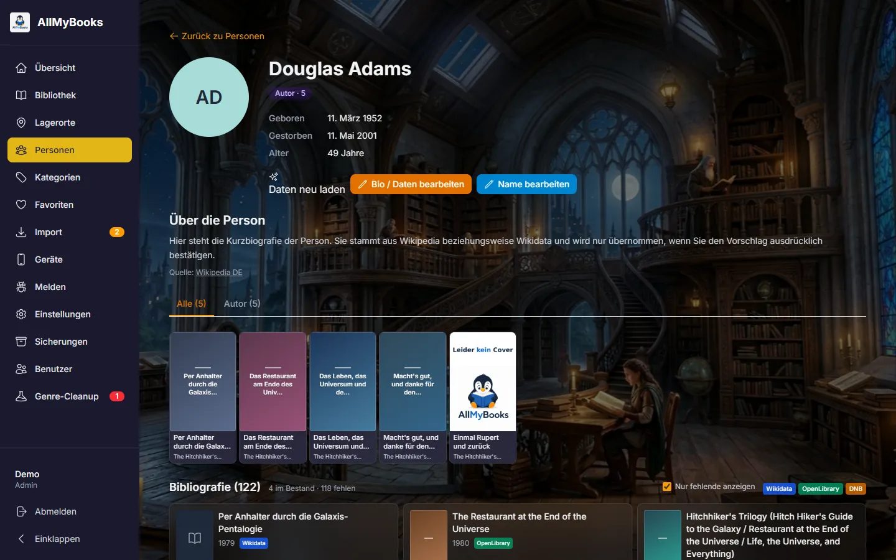
Sie hat drei Teile:
- Kopf mit Lebensdaten — Geburts- und Sterbedatum, daraus errechnet das erreichte Alter. Die Kurzbiografie darunter nennt immer ihre Quelle.
- Die Bücher im Bestand, nach Rolle getrennt: Wer sowohl geschrieben als auch übersetzt hat, bekommt je einen Reiter.
- Die Bibliografie — das vollständige Werkverzeichnis, zusammengetragen aus Wikidata, OpenLibrary und der DNB. Jeder Eintrag trägt eine Marke, aus welcher Quelle er stammt.
Über der Bibliografie steht, wie viele Werke einer Person Sie besitzen und wie viele nicht („4 im Bestand · 118 fehlen“). Das Häkchen daneben blendet alles aus, was Sie schon haben — übrig bleibt genau die Liste dessen, was Ihrer Sammlung noch fehlt.
Sie stammt aus offenen Datenbanken. Dort fehlen Ausgaben, oder derselbe Roman steht mehrfach unter verschiedenen Titeln. Nehmen Sie die Liste als Anhaltspunkt, nicht als amtliches Verzeichnis.
Kategorien und Genres
Genres stammen aus einer gepflegten Liste und werden beim Anlegen eines Titels automatisch zugeordnet. Wo die Automatik unsicher ist, legt sie einen Vorschlag zur Entscheidung ab — sichtbar an der Zahl neben Import und Genre-Cleanup.
Die vollständige Liste aller Genres und Schlagworte — mit der Zahl der zugeordneten Titel, zum Umbenennen, Löschen und Zuordnen — steht unter Einstellungen → Genres bzw. → Tags.
Kategorien legen Sie selbst an, für alles Weitere: „Geschenkidee“, „Signiert“, „Doppelt vorhanden“. Ein Titel kann in beliebig vielen Kategorien stehen.
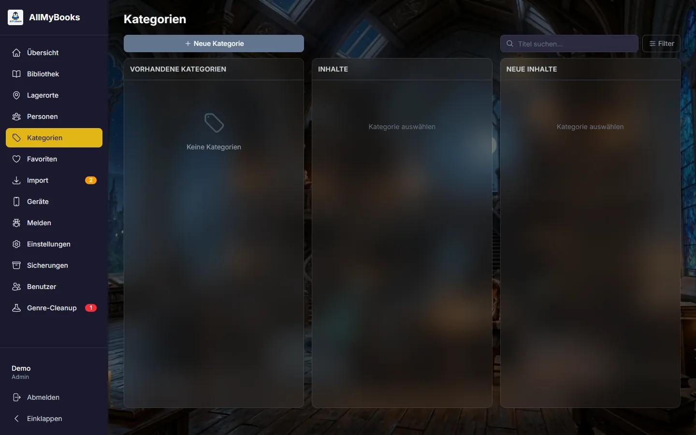
Lagerorte
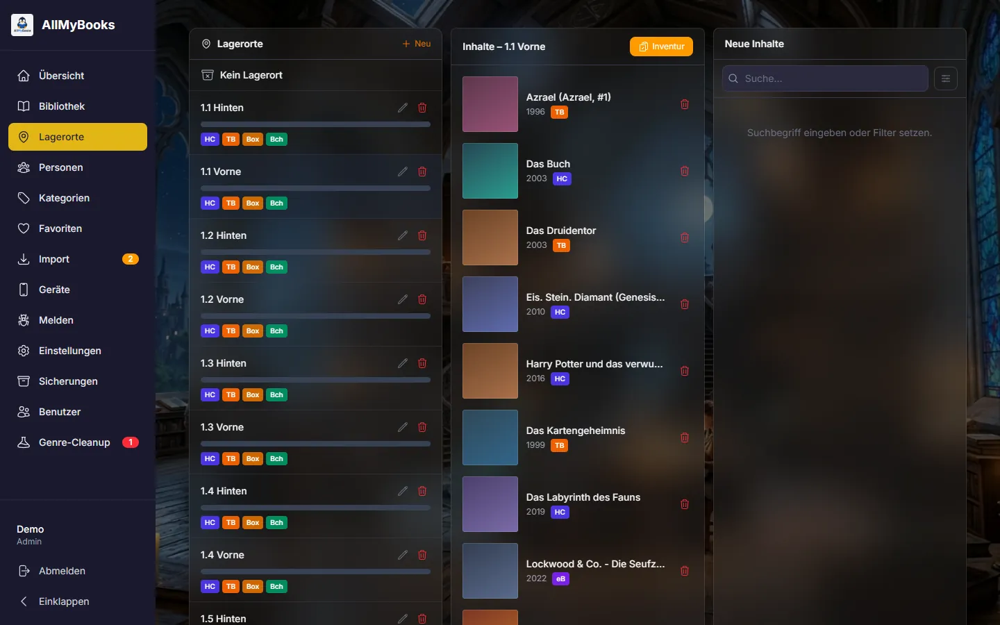
Links die Liste, rechts der Inhalt des ausgewählten Lagerorts. Kein Lagerort ganz oben sammelt alles, was noch keinem Ort zugeordnet ist — eine praktische Aufräumliste.
Wird bei einem Lagerort keine Ausgabeart angehakt, sind dort alle erlaubt — nicht keine. Das gilt an jeder Stelle, an der diese Regel greift.
Inhalt eines Lagerorts
Die mittlere Spalte zeigt, was im gewählten Regal steht. Die rechte Spalte Neue Inhalte ist das Gegenstück: Dort suchen Sie Titel aus dem Bestand und hängen sie in dieses Regal um. So räumen Sie eine frisch importierte Bibliothek auf, ohne jeden Titel einzeln zu öffnen.
Die Inventur
Einmal im Jahr das Regal durchgehen und abgleichen, was wirklich noch da ist — dafür gibt es den Inventur-Modus. Sie stehen mit dem Gerät vor dem Regal, gehen die Liste durch und haken ab.
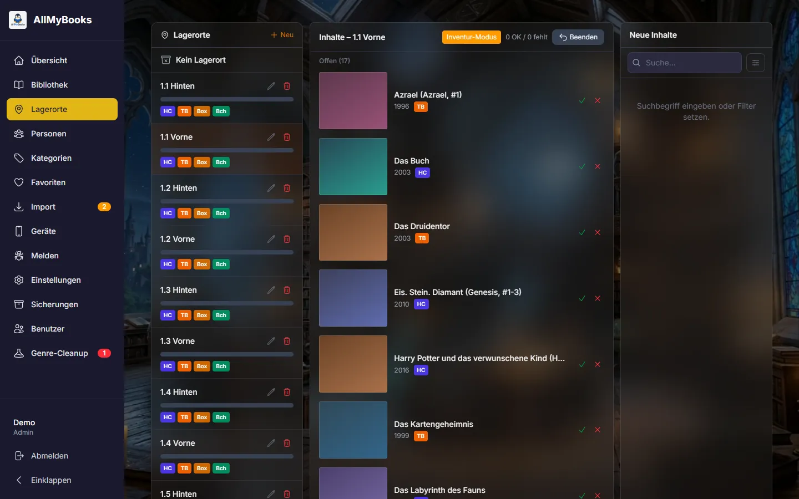
-
Lagerort wählen und starten
Der Knopf Inventur erscheint erst, wenn ein Lagerort gewählt ist — und nur für Administratoren. Ein farbiger Hinweis zeigt danach an, dass der Modus läuft.
-
Durchgehen und markieren
Zu jedem Titel entscheiden Sie: vorhanden oder fehlt. Der Zähler oben zählt beides mit. Sie können zwischendurch den Lagerort wechseln — bereits bearbeitete Regale bleiben gemerkt, die Inventur läuft weiter.
-
Beenden und entscheiden
Beim Beenden fragt die Anwendung, was mit den Titeln geschehen soll, die Sie nicht angefasst haben. Erst hier wird gespeichert.
| Auswahl beim Beenden | Wirkung auf die unmarkierten Titel |
|---|---|
| Als vorhanden markieren | Sie gelten als da. Eine bestehende Vermisst-Markierung wird aufgehoben. |
| Als fehlend markieren | Sie bekommen die Markierung Vermisst. Sinnvoll, wenn Sie das Regal wirklich vollständig durchgegangen sind. |
| Verwerfen | Nichts wird gespeichert, die Inventur endet folgenlos. Der Weg hinaus, wenn Sie sich vertan haben. |
Der Sammeleintrag ganz oben lässt sich im Inventur-Modus anwählen wie ein echtes Regal. „Als fehlend markieren“ träfe dort jedes Buch, das noch keinem Lagerort zugeordnet ist — bei einer frisch importierten Bibliothek schnell hunderte, die gar nicht verschwunden sind, sondern nur nicht einsortiert.
Die Anwendung warnt in diesem Fall rot und verlangt einen zweiten Klick zur Bestätigung.
Wiedergefundene Bücher
Ist ein Titel früher einmal als vermisst markiert worden und taucht beim Durchgehen eines anderen Regals wieder auf, lässt er sich dort als gefunden melden. Er wandert dann in dieses Regal, und die Vermisst-Markierung fällt weg — Sie müssen ihn nicht suchen und von Hand umhängen.
Bei einem Titel, der Teil eines Boxsets ist, erscheint die Rückfrage, ob nur dieser Band gemeint ist oder das ganze Boxset. Schließlich steht ein Schuber meist vollständig im Regal — oder gar nicht.
Favoriten
Alles, was Sie mit dem Herz markiert haben — je Konto getrennt. Zwei Personen im selben Haushalt haben also verschiedene Favoritenlisten.
Import
Der Bereich mit den meisten Möglichkeiten. Jeder Reiter ist ein eigener Weg, Bücher hineinzubekommen.
ISBN-/Titel-Suche
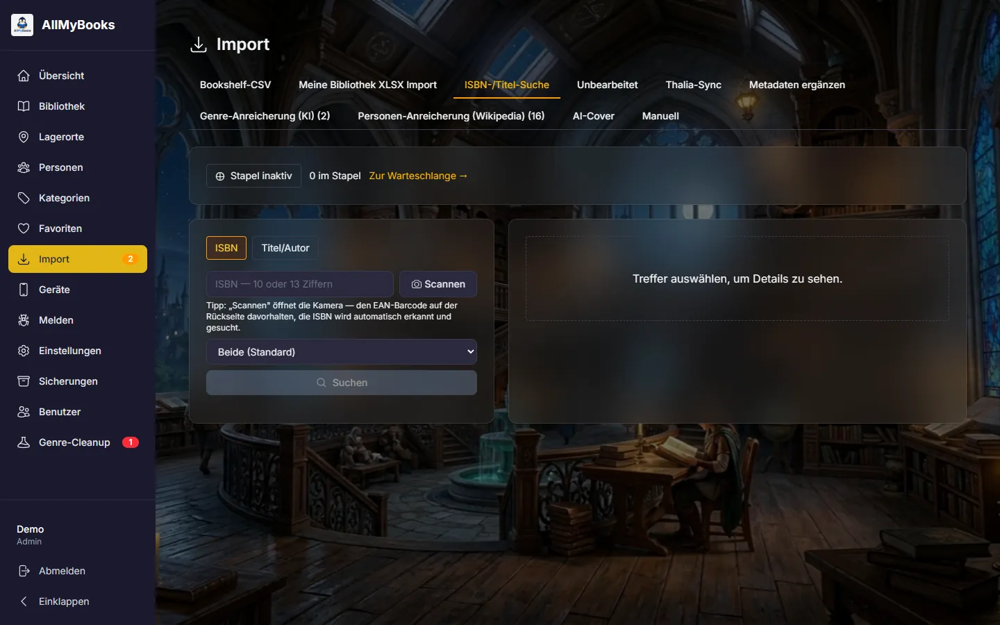
Auf einem Gerät mit Kamera lässt sich der Strichcode auf der Rückseite des Buchs direkt einlesen, statt die dreizehn Ziffern abzutippen.
Bookshelf-CSV und Meine Bibliothek XLSX
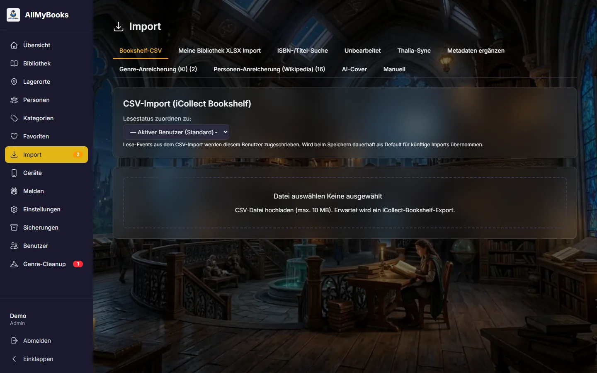
Zwei Wege für den Umstieg aus iCollect Bookshelf bzw. Meine Bibliothek. Der Regalwert aus der Datei wird als Lagerort übernommen; nur wo keiner steht, greift der Standard-Lagerort des Laufs.
Thalia-Sync
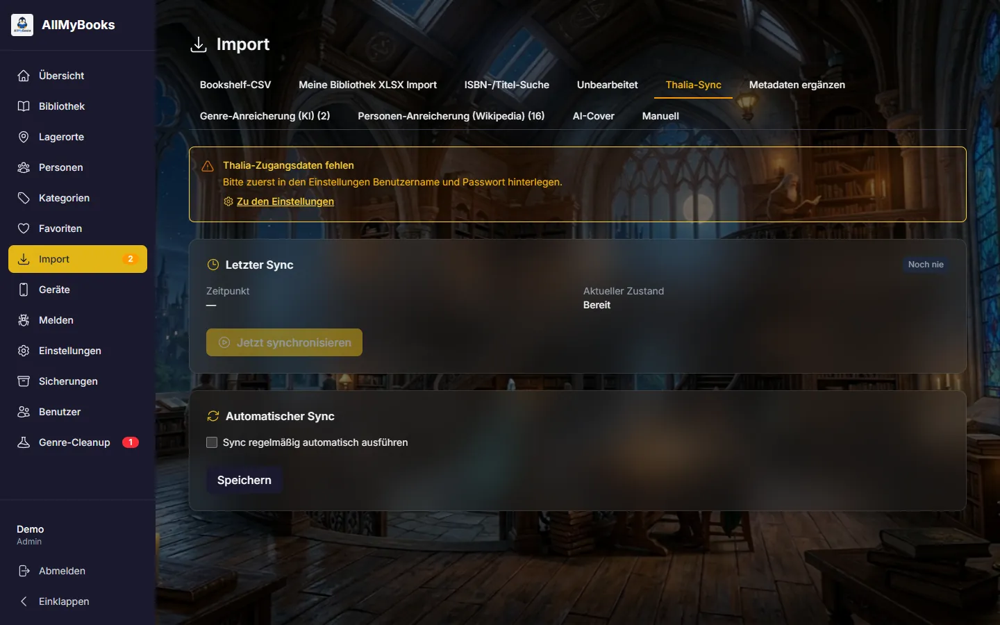
Übernimmt die Angaben zu Ihren gekauften E-Books aus der Tolino-Cloud. Zugangsdaten werden vorher unter Einstellungen → Import hinterlegt; das Passwort wird verschlüsselt gespeichert und ist danach auch für Sie nicht mehr auslesbar. Bitte lesen Sie dazu den Abschnitt Rechtliches.
E-Books ohne ISBN landen in Unbearbeitet, statt zu verschwinden.
Unbearbeitet — der Stapel
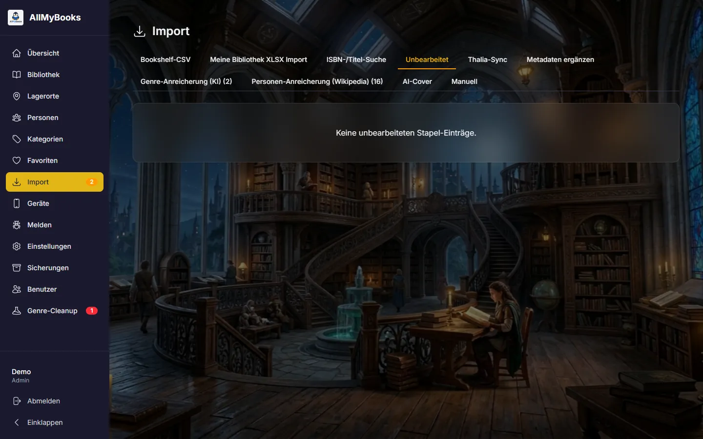
Jeder Eintrag lässt sich einzeln ergänzen und übernehmen. Markieren Sie zwei oder mehr, erscheint oben eine Sammelleiste, und die Knöpfe auf den Karten werden gesperrt — so ist immer nur ein Weg offen und es bleibt klar, worauf sich eine Eingabe bezieht.
Beim Lagerort in der Sammelleiste ist das die Vorgabe. Wählen Sie stattdessen einen festen Ort, bekommen alle markierten Bücher diesen — auch die, die längst den richtigen hatten.
Das Cover eines Stapel-Eintrags
Ein Klick auf das Bild einer Karte — oder auf den Knopf Cover — öffnet die Cover-Bearbeitung, noch bevor der Titel in der Bibliothek steht. Dort lässt sich die Aufnahme drehen, zuschneiden, entzerren und in den Farben anpassen, genau wie bei einem fertigen Titel.
Derselbe Weg steht im Formular hinter dem Knopf Bearbeiten: Der Abschnitt Cover führt jede gewählte Datei durch den Editor, und Aufnahmen am Stapel-Eintrag bearbeiten öffnet dasselbe Fenster mit beiden Buchseiten.
Das Fenster zeigt seit Fassung 1.18.0 genau das, was auch der Reiter Cover eines angelegten Titels bietet: beide Seiten mit dem Tausch-Pfeil, Klick zum Bearbeiten, Löschen, Cover suchen in DNB, Google Books und OpenLibrary, Datei oder Foto — und Von URL herunterladen. Was dort dazukommt, ist hier ebenfalls da.
Trägt der Eintrag noch gar kein Bild — der Normalfall bei Büchern aus einer Importdatei —, stehen dort drei Wege offen:
| Weg | Wofür |
|---|---|
| Foto aufnehmen | Auf Geräten mit Kamera: das Buch direkt abfotografieren. |
| Datei wählen | Ein Bild von der Festplatte. |
| Online-Cover übernehmen | Erscheint, wenn beim Nachschlagen ein Cover gefunden wurde. Es wird heruntergeladen und ist danach bearbeitbar. |
Beide Buchseiten lassen sich in einem Durchgang aufnehmen. Der Pfeil zwischen den beiden Aufnahmen vertauscht Vorder- und Rückseite — dieselbe Geste wie in der Cover-Bearbeitung eines Titels.
Drehen, Zuschneiden und die Wahl der Seite gehen unmittelbar an den Server. Sie überstehen das Schliessen des Fensters und bleiben erhalten, bis der Eintrag als Titel übernommen wird.
Metadaten ergänzen
Sucht für Titel, denen Angaben fehlen, noch einmal nach. Sinnvoll nach einem großen Import oder nachdem Sie einen Google-Books-Schlüssel hinterlegt haben.
Genre-Anreicherung und Personen-Anreicherung
Zwei Vorschlagslisten: Genres, bei denen die Automatik unsicher war, und Personen, zu denen es einen Wikipedia-Eintrag geben könnte. Beides wird Ihnen vorgelegt — entschieden wird nichts ohne Sie.
AI-Cover
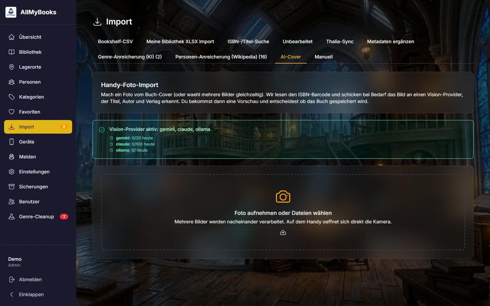
Fotografieren Sie ein Cover ab; die Erkennung liest Titel und Autor heraus und kann den Klappentext von der Rückseite als Beschreibung übernehmen. Hinterlegbar sind ein Gemini- oder Claude-Schlüssel oder die Adresse einer Ollama-Installation auf dem eigenen Rechner. Über die Reihenfolge legen Sie fest, wer zuerst gefragt wird.
Dort zeigt localhost auf den Container selbst. Tragen
Sie die Netzwerkadresse des Rechners ein, etwa
http://192.168.1.50:11434, und benutzen Sie ein Modell,
das Bilder versteht.
Manuell
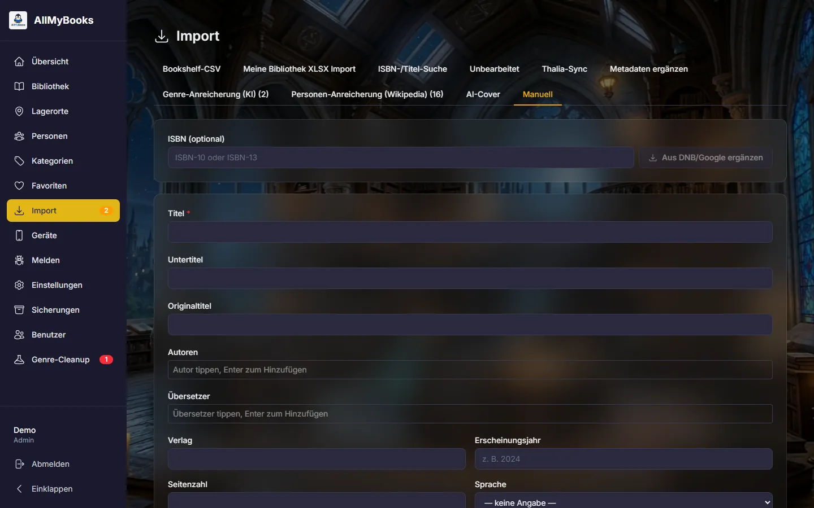
Geräte
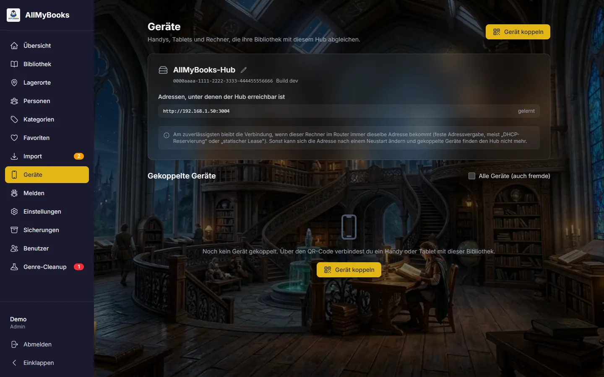
Hier verwalten Sie, welche Handys und Tablets mit Ihrem Hub arbeiten dürfen:
| Aktion | Wirkung |
|---|---|
| Gerät koppeln | Erzeugt QR-Code und Kopplungscode für ein neues Gerät. |
| Widerrufen | Das Gerät gleicht nicht mehr ab, bleibt aber in der Liste. Lässt sich jederzeit wieder freigeben. |
| Wieder freigeben | Nimmt einen Widerruf zurück — ohne dass am Gerät selbst etwas zu tun wäre. |
| Endgültig entfernen | Löscht den Eintrag. Für dieses Gerät ist danach eine neue Kopplung nötig. |
Sicherungen
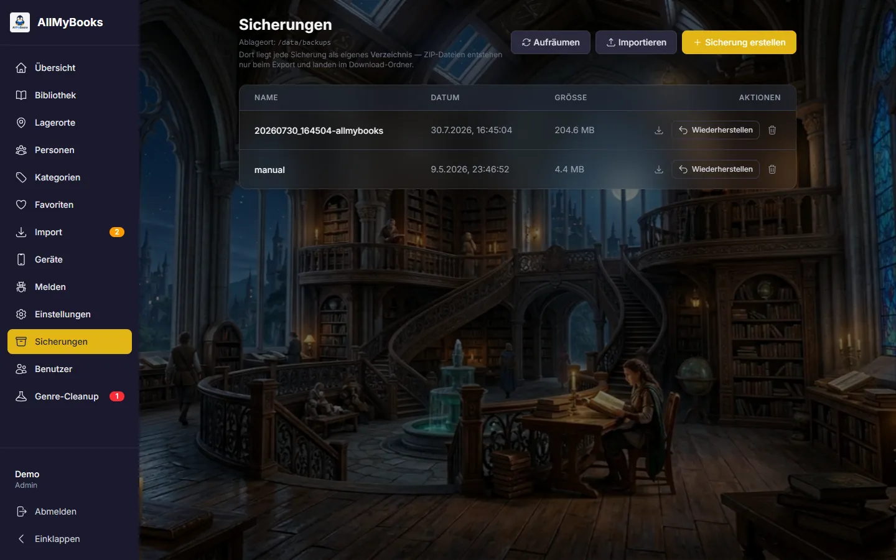
Der Zeitplan dafür steht unter Einstellungen → Sicherungen. Ausführlich beschrieben ist der ganze Vorgang unter Sichern und wiederherstellen.
Benutzer
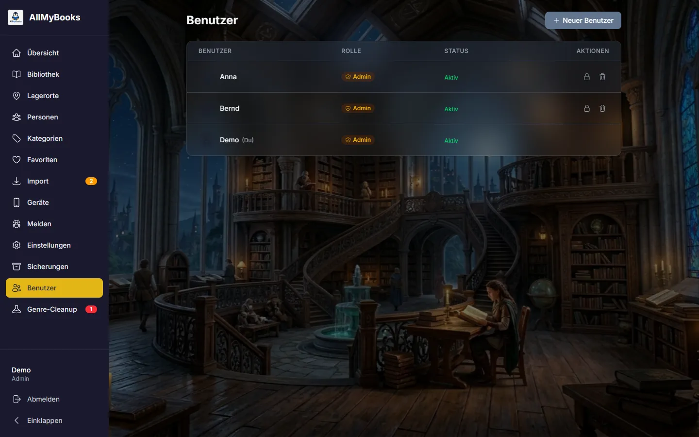
Es gibt zwei Rollen:
| Rolle | Darf |
|---|---|
| Administrator | Alles — einschließlich Einstellungen, Benutzerverwaltung, Sicherungen und Geräteverwaltung. |
| Benutzer | Den Bestand ansehen und pflegen, eigene Lese-Einträge und Favoriten setzen. Keine Verwaltungsbereiche. |
Ein neu angelegtes Konto bekommt ein Anfangspasswort, das der Benutzer beim ersten Anmelden ändern muss; dabei legt er auch seine Sicherheitsfragen fest.
Einstellungen
Die Einstellungen sind in sieben Reiter geteilt:
| Reiter | Inhalt | Speichern-Knopf |
|---|---|---|
| Anzeige | Helles oder dunkles Thema, Startseite nach dem Anmelden. | nein — gilt sofort |
| Bibliothek | Nach wie vielen Tagen die Markierung „Neu“ von selbst verfällt. | ja |
| Import | Metadaten-Quellen, Google-Books-Schlüssel, Thalia-Zugangsdaten, KI-Erkennung. | ja |
| Tags | Alle Schlagworte: ansehen, umbenennen, löschen, Titel zuordnen und lösen. | nein — jeder Vorgang gilt sofort |
| Genres | Dasselbe für die Genres. | nein — jeder Vorgang gilt sofort |
| Sicherungen | Zeitplan, Aufbewahrung, Ordner — und die Gefahrenzone. | ja |
| App | Aktualisierung, lokaler Bestand, Fassungsangaben, ausführliches Protokoll. | nein |
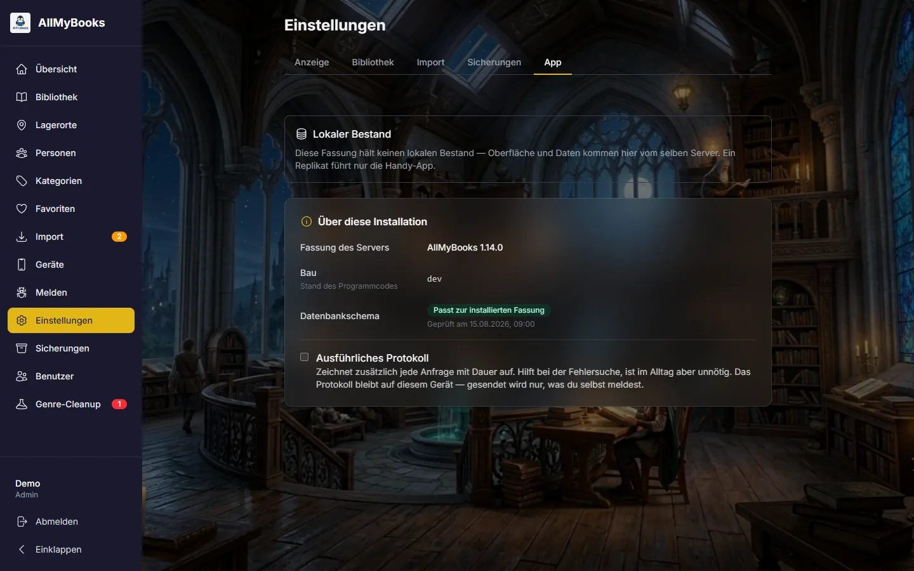
Tags und Genres verwalten
Beide Reiter sind gleich aufgebaut. Links stehen alle Einträge mit einem Suchfeld und der Zahl der zugeordneten Titel — daran sieht man auf einen Blick, was verwaist ist und was die Bibliothek wirklich trägt. Ein Klick wählt einen Eintrag aus; rechts erscheinen dann:
- Umbenennen — der Name gilt sofort für alle Titel.
- In der Bibliothek — öffnet die Bibliothek, auf genau diesen Eintrag gefiltert. Dort stehen Sortierung, weitere Filter und die Stapelverarbeitung bereit.
- Löschen — der Eintrag verschwindet und wird von allen Titeln entfernt. Die Titel selbst bleiben unverändert.
- Zugeordnete Titel — die vollständige Liste. Das Kreuz daneben löst die Zuordnung eines einzelnen Titels, ohne ihn zu verändern.
- Titel zuordnen — Suchfeld, Mehrfachauswahl, ein Knopf. Bereits zugeordnete Titel sind gekennzeichnet und lassen sich nicht doppelt auswählen.
Geben Sie einen Namen ein, den es bereits gibt, werden beide Einträge verschmolzen: Alle Titel wandern zum vorhandenen, der umbenannte verschwindet. Das ist meistens genau das, was man will — deshalb fragt AllMyBooks vorher ausdrücklich nach. Rückgängig machen lässt es sich nicht.
Wer kein Administrator ist, sieht in den Einstellungen nur den Reiter App — dort steht auf Android die Aktualisierungskarte, und das ist der einzige Weg zu einer neuen Fassung der App.
Ganz unten im Reiter Sicherungen steht der Knopf, der alle Titel, Ausgaben, Cover, Lese-Einträge, Verleihungen, Favoriten und Stapel-Einträge löscht. Erstellen Sie vorher eine Sicherung. Benutzerkonten und Lagerorte bleiben erhalten.
Das Handy anbinden
Die App braucht einen Hub. Die Verbindung entsteht über einen QR-Code, den der Hub anzeigt.
-
Am Hub den Code erzeugen
Am Rechner, auf dem der Server läuft: Geräte öffnen, dann Gerät koppeln. Es erscheinen ein QR-Code, darunter die Adresse und ein achtstelliger Kopplungscode.
-
In der App scannen
In der App auf QR-Code aufnehmen tippen und den Code abfilmen. Fertig — die App merkt sich die Verbindung dauerhaft.
-
Anmelden
Danach melden Sie sich mit Ihrem gewohnten Konto an. Kopplung und Anmeldung sind zwei verschiedene Dinge: Die Kopplung verbindet das Gerät mit dem Hub, die Anmeldung weist Sie als Person aus.
Sie muss die Form http://192.168.1.50:3004 haben — mit
Punkten zwischen den Zahlen, ohne Leerzeichen. Die Bildschirmtastatur
macht aus einem Punkt gern ein Leerzeichen, und eine fehlende Ziffer
sieht man leicht. Der QR-Code umgeht das vollständig.
Werden mehrere Adressen angeboten, steht die aus Ihrem Heimnetz zuerst.
Eine Adresse, die aus dem Heimnetz hinausführt, lehnt die App ab —
unverschlüsselt gingen dort sonst Benutzername und Passwort hinaus.
Für einen Server außerhalb braucht es eine Adresse mit
https://.
Was die App kann
Sie zeigt Ihre Bibliothek, Personen, Cover und Lagerorte, markiert Bücher als gelesen, setzt Favoriten und liest ISBN-Codes mit der Kamera ein.
Damit sie unterwegs nicht leer bleibt, legt sie eine Lesekopie des Bestands auf dem Gerät an — die Bibliothek und die Titelseiten sind dadurch auch ohne Verbindung sichtbar. Der Bestand selbst liegt weiterhin beim Hub; sobald die Verbindung wieder steht, gleicht die App ab.
Mehrere Server
Die App kann mehrere Hubs gleichzeitig kennen — etwa den NAS zu Hause und die eigenständige Installation auf dem Notebook. Umgeschaltet wird über die Seitenleiste, ohne neu zu koppeln und ohne sich neu anzumelden.
Der erste Eintrag nimmt einen Hub zusätzlich auf und wirft nichts weg. Der zweite entfernt den gerade aktiven samt seiner lokalen Lesekopie und fragt vorher nach.
Aktualisierungen
Windows
Das Programm prüft beim Start und danach stündlich, ob eine neue Fassung vorliegt, und lädt sie im Hintergrund. Sie können dabei normal weiterarbeiten. Erst wenn der Download fertig ist, werden Sie gefragt: jetzt neu starten oder später.
Eingespielt wird es über „Aktualisieren auf <Fassung>“ im Symbol neben der Uhr. Das ist Absicht: Früher installierte sich das Update beim Beenden von selbst, und damit war die Wahl „Später“ wertlos, sobald man das Fenster versehentlich schloss.
Der Eintrag im Symbol neben der Uhr sagt Ihnen jederzeit, woran Sie sind:
| Was dort steht | Was es bedeutet |
|---|---|
| Auf Aktualisierungen prüfen | Noch nicht nachgesehen — ein Klick startet die Suche. |
| Suche nach Aktualisierungen … | Läuft gerade. |
| Aktuell — erneut prüfen | Zuletzt war nichts Neues da. |
| Lädt Fassung X … 42 % | Ein Update kommt gerade herunter. |
| Aktualisieren auf X | Fertig geladen, wartet auf Ihren Klick. |
| Prüfung fehlgeschlagen — erneut versuchen | Kam nicht durch, meist fehlt die Internetverbindung. |
Schlägt die Prüfung fehl, bleibt es ansonsten still — Ihre Bibliothek ist davon nicht betroffen, sie läuft über Ihren eigenen Server.
Android
Die App meldet sich beim Start, wenn eine neue Fassung bereitliegt. Nachsehen können Sie jederzeit selbst unter Einstellungen → App-Aktualisierung; dort steht auch die installierte Fassung.
Anders als bei Windows lädt die App nicht von selbst im Hintergrund. Sie prüft nur; heruntergeladen wird erst, wenn Sie zustimmen.
„Unbekannte Apps installieren“. Der Weg dorthin ist schwer zu finden, deshalb führt ein Knopf direkt hin. Daneben steht immer der Weg von Hand über den Release-Bereich, falls etwas klemmt.
Server im Container
Dort wird über die Oberfläche Ihres Docker-Systems aktualisiert. Ein Container kann sein eigenes Abbild nicht austauschen — deshalb gibt es in den Einstellungen bewusst keinen Update-Knopf.
Auch die hinterlegten Schlüssel und das Thalia-Konto. Eine Deinstallation lässt den Datenordner ebenfalls stehen.
Sichern und wiederherstellen
Eine Sicherung enthält beides: die Datenbank und die Bilddateien. Sie ist damit vollständig — und zugleich der Weg, den Bestand auf einen anderen Rechner umzuziehen.
Eine Sicherung erstellen
Über Sicherungen in der Seitenleiste, Knopf Sicherung erstellen. Von dort lässt sie sich auch herunterladen — sinnvoll, um sie an einen zweiten Ort zu legen.
Sie hilft gegen Fehlbedienung, nicht gegen einen Plattenschaden. Legen Sie den Sicherungs-Ordner auf ein anderes Laufwerk oder in eine Cloud-Ablage — bei eigenständigem Betrieb ist er frei wählbar.
Eine Sicherung zurückspielen
Ebenfalls über Sicherungen. Der Vorgang dauert bei einem gewachsenen Bestand einige Minuten — es werden hunderte Bilddateien bewegt. Ein Fortschrittsbalken zeigt, in welchem der Schritte er gerade steckt.
Auch die Benutzerkonten. Sie melden sich danach mit den Zugangsdaten an, die zum Zeitpunkt der Sicherung galten — nicht mit denen, die Sie eben noch benutzt haben. Während des Vorgangs weist die Anwendung schreibende Zugriffe ab; das ist gewollt.
Umzug auf einen anderen Rechner
Der Weg ist derselbe wie beim Wiederherstellen, nur über zwei Geräte:
- Auf dem alten Gerät
Sicherung erstellen und herunterladen.
- Auf dem neuen Gerät
AllMyBooks installieren und ein erstes Konto anlegen — das braucht die Anwendung, um überhaupt bedienbar zu sein.
- Sicherung hochladen und zurückspielen
Danach gelten wieder die Konten aus der Sicherung; das eben angelegte ist damit hinfällig.
Der Umzug funktioniert in beide Richtungen — vom Container auf einen Windows-PC ebenso wie umgekehrt. Die Pfade der Bilddateien werden dabei automatisch umgeschrieben.
Fehlersuche
Das Handy findet den Hub nicht mehr
Der häufigste Grund ist eine geänderte Adresse des Servers.
- Läuft der Server überhaupt? Bei eigenständigem Betrieb muss das Programm auf dem anderen Rechner geöffnet sein.
- Hat der Server noch dieselbe Adresse? Vergleichen Sie sie mit der unter Geräte angezeigten.
- Sind beide Geräte im selben Netz? Ein Gastnetz oder ein aktives VPN auf dem Handy trennt sie.
Dauerhafte Abhilfe: dem Servergerät im Router eine feste Adresse geben.
Die App zeigt „Diese Kopplung gilt nicht mehr“
Das Gerät wurde am Hub widerrufen oder entfernt. Wurde es versehentlich widerrufen, geben Sie es unter Geräte wieder frei und tippen in der App auf Erneut versuchen — Ihre lokale Lesekopie bleibt dabei erhalten.
Neu koppeln ist der Weg für den Fall, dass der Eintrag wirklich gelöscht wurde. Er wirft die lokale Kopie weg.
Nach einer Neuinstallation der App sind die alten Einstellungen wieder da
Android sichert die Daten der App und spielt sie bei einer Neuinstallation wieder ein — samt alter Serveradresse. Deinstallieren behebt einen Verbindungsfehler deshalb nicht.
Der Weg, der wirkt: Einstellungen → Apps → AllMyBooks → Speicher → Daten löschen.
Der eigenständige Server startet nicht
Eine häufige Ursache ist ein durch Windows reservierter Portbereich. Das passiert vor allem, wenn parallel Docker Desktop läuft — dessen Hintergrunddienst belegt ganze Bereiche, auch ohne dass ein Container läuft.
Sofort hilft: Docker Desktop beenden und AllMyBooks neu starten.
Ein Import bricht ab oder findet keine Cover
Meist ist die Tagesgrenze von Google Books erreicht: ohne eigenen Schlüssel rund 100 Abfragen. Hinterlegen Sie einen kostenlosen Schlüssel — damit sind es etwa 1.000.
Die DNB liefert grundsätzlich keine Cover; Titel, die nur dort gefunden wurden, bleiben ohne Bild, bis Sie eines hinzufügen.
Der Thalia-Abgleich meldet einen Fehler
- Stimmen Benutzername und Passwort? Das Passwort ist nach dem Speichern nicht mehr auslesbar — tragen Sie es im Zweifel neu ein.
- Läuft schon ein Abgleich? Zwei gleichzeitig gehen nicht.
- Bleibt es dabei, kann es auch an einer Änderung auf Thalias Seite liegen. Diese Funktion arbeitet mit einer Schnittstelle, die sich ohne Ankündigung ändern kann.
Ein Buch steht doppelt in der Bibliothek
Meist stammen die beiden aus verschiedenen Quellen und tragen unterschiedliche ISBN — etwa Taschenbuch und E-Book. Gemeint war vermutlich ein Titel mit zwei Ausgaben.
Öffnen Sie den Titel, der bleiben soll, legen Sie dort die zweite Ausgabe an und löschen Sie anschließend den doppelten Titel.
Ich habe mein Passwort vergessen
Über Passwort vergessen? auf der Anmeldemaske. Sie beantworten Ihre Sicherheitsfragen und vergeben ein neues Passwort.
Sind auch die Antworten nicht mehr bekannt, kann ein Administrator das Konto zurücksetzen. Gibt es keinen zweiten Administrator, bleibt nur das Zurückspielen einer älteren Sicherung.
Die Oberfläche bleibt bei einem Ladebalken stehen
Prüfen Sie zuerst, ob der Server noch antwortet — im Browser die Adresse aufrufen, die unter Geräte steht. Antwortet er dort, hilft meist ein Neuladen der Seite.
Bleibt es dabei, melden Sie es bitte: Der Bericht enthält das Protokoll der Minuten davor, und genau daran lässt sich so etwas finden.
Einen Fehler melden
In der App und im Windows-Programm: Melden in der Seitenleiste. Sie wählen zuerst, worum es geht — Fehler, Verbesserung oder Absturz —, die Fragen richten sich danach. Ein GitHub-Konto brauchen Sie nicht.
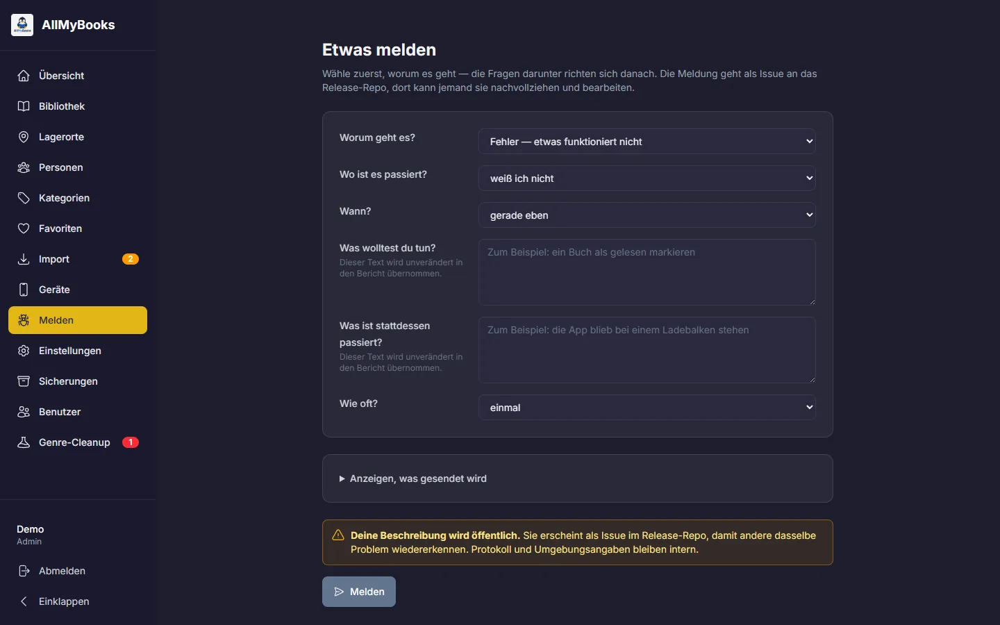
Sie erscheint als Eintrag im Release-Bereich, damit andere dasselbe Problem wiedererkennen. Das technische Protokoll geht nicht öffentlich mit. Schreiben Sie deshalb nichts in die Textfelder, was nicht jeder lesen soll.
Unter „Anzeigen, was gesendet wird“ stehen beide Teile getrennt und wörtlich, bevor Sie absenden. Von dort lässt sich der vollständige Bericht auch in die Zwischenablage legen.
Endet die App unerwartet, fragt sie beim nächsten Start, ob Sie das melden möchten — mit dem Protokoll der Minuten davor. Nur eine Frage; von selbst wird nichts gesendet.
Datenschutz
Ihr Bestand liegt auf Ihren Geräten. Es gibt keine Anmeldung bei einem Dienst, keine Übertragung Ihrer Bibliothek irgendwohin und keine Auswertung Ihres Nutzungsverhaltens.
Verbindungen nach außen entstehen nur an diesen Stellen:
| Wohin | Wofür | Wann |
|---|---|---|
| Deutsche Nationalbibliothek | Buchdaten zu einer ISBN | Bei Import und Metadaten-Suche |
| Google Books | Buchdaten und Cover | Bei Import und Metadaten-Suche |
| Wikipedia / Wikidata | Fotos und Kurzbiografien | Nur bei der Personen-Anreicherung |
| Thalia / Tolino | Angaben zu Ihren E-Books | Nur wenn Sie den Abgleich einrichten |
| Gemini, Claude oder Ollama | Cover-Erkennung | Nur wenn Sie einen Schlüssel hinterlegen. Ollama läuft auf Ihrem eigenen Rechner. |
| GitHub | Prüfung auf neue Fassungen, Fehlerberichte | Beim Start bzw. wenn Sie etwas melden |
Zugangsdaten — der Google-Schlüssel, das Thalia-Passwort, die KI-Schlüssel — werden verschlüsselt gespeichert. Das Thalia-Passwort ist nach dem Speichern auch für Sie nicht mehr auslesbar; bei Bedarf tragen Sie es einfach neu ein.
Diese Handbuchseite
Sie lädt nichts von fremden Servern nach — keine Schriftarten, keine Zählpixel, keine Skripte Dritter. Es gibt keine Cookies und keine Reichweitenmessung. Gespeichert wird ein einziger Eintrag im Speicher Ihres Browsers, und nur dann, wenn Sie das helle oder dunkle Thema ausdrücklich wählen; er verlässt Ihr Gerät nicht.
Die Seite liegt bei GitHub Pages (GitHub Inc.). Wie jeder Webserver verarbeitet GitHub dabei technisch notwendige Verbindungsdaten — insbesondere Ihre IP-Adresse. Darauf haben wir keinen Einfluss; es gelten die Datenschutzbestimmungen von GitHub.
Sie stammen aus einer echten Installation, sind für diese Anleitung aber bereinigt: Netzwerkadressen und Kontonamen sind durch Beispielwerte ersetzt, Buchcover durch selbst erzeugte Ersatzbilder und Personenfotos durch Initialen. In Ihrer eigenen Installation stehen dort die echten Cover und Fotos.
Rechtliches
AllMyBooks ist ein privates Projekt und steht in keiner Verbindung zu Thalia, tolino, Google oder einem anderen der genannten Anbieter. Es wird von ihnen weder herausgegeben noch geprüft oder unterstützt. Thalia, tolino und die übrigen genannten Namen sind Marken ihrer jeweiligen Inhaber und werden hier ausschließlich genannt, um zu beschreiben, womit die Software zusammenarbeitet.
Zum Thalia-Abgleich
Der Abgleich meldet sich mit Ihren eigenen Zugangsdaten an und liest ausschließlich die Daten Ihres eigenen Kontos: Titel, Autor, ISBN, Cover und Lesefortschritt Ihrer gekauften E-Books.
Nicht heruntergeladen werden die Buchdateien. Es wird kein Kopierschutz umgangen, nichts vervielfältigt und nichts an Dritte weitergegeben. Ihre Zugangsdaten liegen verschlüsselt auf Ihrem eigenen System und werden an niemanden außer Thalia selbst gesendet.
Gleichwohl, offen gesagt: Die verwendete Schnittstelle ist nicht für den Zugriff durch fremde Software vorgesehen. Die Nutzung dieser Funktion kann den Nutzungsbedingungen von Thalia widersprechen und erfolgt auf eigene Verantwortung. Wer das nicht möchte, lässt sie einfach ungenutzt — alle übrigen Funktionen arbeiten vollständig unabhängig davon.
Gewährleistung
Die Software wird bereitgestellt, wie sie ist, ohne Zusicherung irgendeiner Art. Die Nutzung erfolgt auf eigenes Risiko; für Schäden oder Datenverlust wird keine Haftung übernommen.
Legen Sie Sicherungen an (siehe Die ersten Schritte, Punkt 1) — das gilt für jede Software, die Ihre Daten verwaltet.